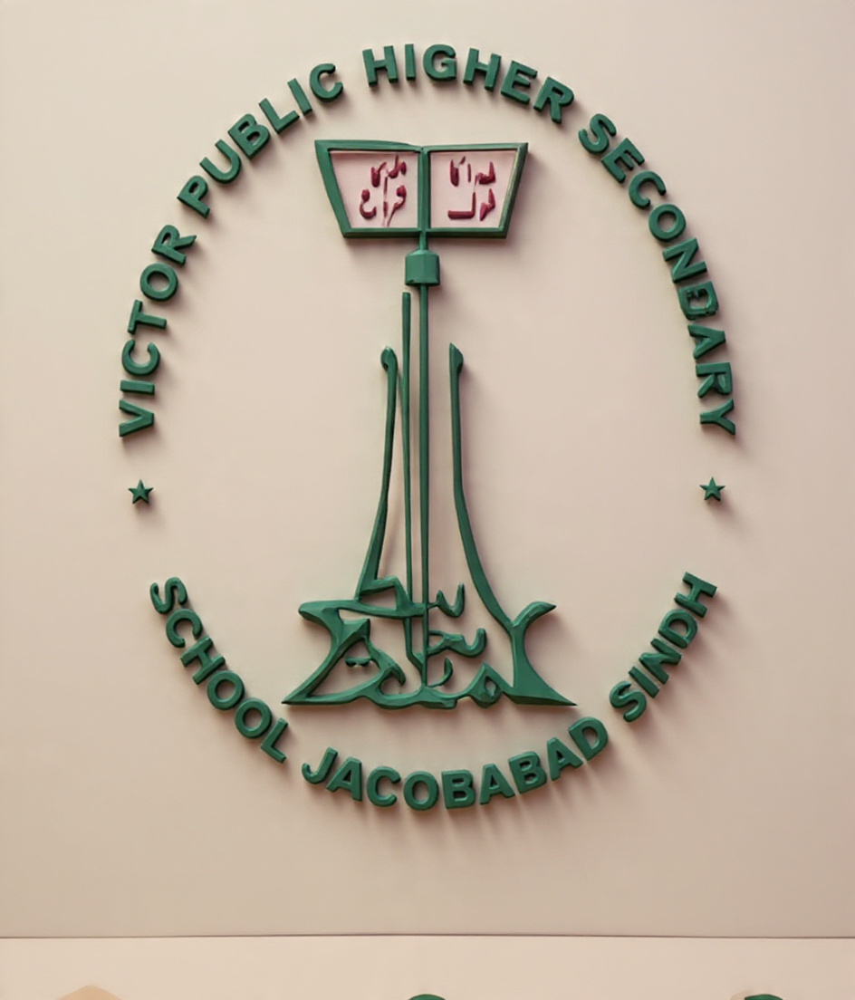
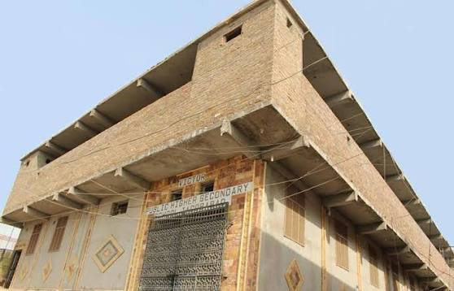
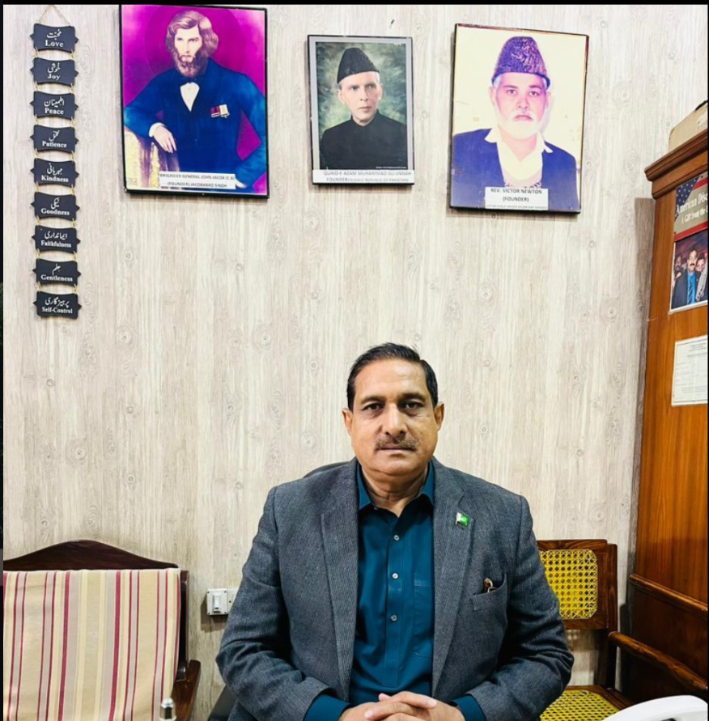
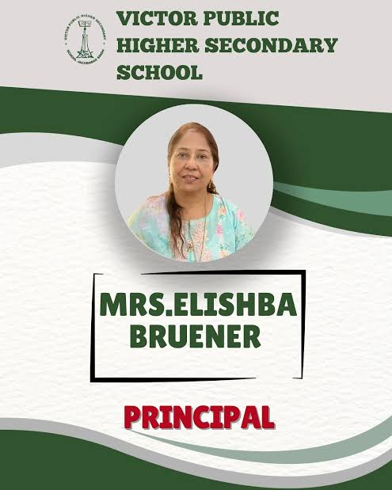

Academic Growth
Encouraging curiosity, strong foundations and a lifelong love of learning.

VICTOR PUBLIC HIGHER SECONDARY SCHOOLJacobabad • Sindh • Pakistan
Welcome to Victor Public Higher Secondary School — a community built around knowledge, character, discipline, confidence and a strong belief in every learner's potential.

Education shapes not only minds, but lives.
About the School
Victor Public Higher Secondary School, Jacobabad is presented as a welcoming learning community where academic development and personal character grow together.
Our school identity is rooted in the values represented by the emblem: education, discipline, hope, responsibility and service to the community.
Discover our vision →Encouraging curiosity, strong foundations and a lifelong love of learning.
Building integrity, kindness, self-control and respect alongside achievement.
Helping students develop confidence, communication and practical skills.
Creating a culture where students, teachers and families move forward together.

Leadership & Vision
“A school should do more than prepare students for examinations. It should prepare them to become responsible, confident and compassionate people.”
With a vision centered on meaningful education and strong values, Victor Public Higher Secondary School can continue building an environment where students are encouraged to think boldly, act responsibly and contribute positively to society.
Our Leadership
Meet the leadership team featured in the school's provided materials.

Leading with care, structure and a commitment to student development.
Supporting a respectful, safe and disciplined school environment.
The Student Experience
Focused learning experiences that help students build confidence in core subjects.
Daily habits and values that encourage responsibility, respect and self-control.
Opportunities to express ideas clearly, work with others and become confident speakers.
Preparing learners for further education, technology and an evolving world.
School Gallery
School life, leadership and identity — presented through the photographs provided for this website.
Contact Us
For admissions, school information, partnership enquiries or general questions, reach out to Victor Public Higher Secondary School.